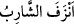
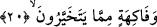
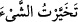
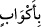
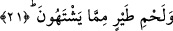

“Ne de akılları giderilir.” Yâni sarhoş olmazlar, akılları başlarından gitmez. Yahut
şarapları bitip tükenmez. Şarabı biten veya aklı giden sarhoşun bu hâlini ifâde etmek
için
(enzefe’ş-şâribü) denir. “Bitip tükenmek” ya akıl içindir ki bu, dünya
şarabının zararlı yönlerinden biridir. Veya şarap içindir ki, şarabın bitmesiyle
sarhoşların sohbetleri bozulur, arkadaşlıkları biter.
20. (Onlara) beğendikleri meyveler,
Arapçada “bir şeyin en iyisini aldım” anlamını ifâde etmek üzere __WORD__ cümlesi
kullanılır. Âyet-i kerîmenin mânâsı şöyledir: “Cennet halkı meyvelerin en iyisini ve
renk bakımından en üstününü seçip alırlar. Aslında cennet meyvelerinin hepsi iyidir.
Bu âyet, önceki ayette geçen __WORD__ (bi ekvâbin) kelimesine atfedilmiştir. Buna göre
atıfla birbirine bağlanan âyetlerin mânâsı şöyle olur: “O cennetliklerin çevrelerinde
ölümsüz gençler meyvelerin en iyisini sunarak dolaşırlar.” Bu meyveler lezzet için
zevkle yenen nimetlerdir, sağlığı korumak için değil. Çünkü cennet halkı orada
sağlıklarını besinlerle korumak ihtiyacı duymazlar. Bu yiyecekler, dünyada muhtac olup
yemek zorunda kalan ve geciktiğinde sıkıntıya düşen kimsenin aldığı azık gibi değildir.
Bu âyet-i kerîmede, cennetlik olan kimsenin, nimet olarak kendisine ihsân edilen
yiyeceklerden istifâde edeceğine işâret olunmaktadır.
Bunun peşinden Allah Teâlâ yiyeceklerin en üstünü olan bir et çeşidinden bahsetti.
Araplar daha ziyade deve eti yerlerdi. Etlerin en güzeli olan kuş eti ise son derece az
bulunurdu. Kuş etinin ancak kralların sofralarında yendiğini işitirlerdi. Bu sebeple
onlara kuş eti verileceği vaadedilip şöyle buyruldu:
21. Canlarının çektiği kuş etleri,
Arzu ettikleri kuş etlerini, gerek kızartılmış gerekse suda pişirilmiş halde iştahla
yerler. Ne mecbur kaldıkları ne de zorlandıkları için değil.
Bunun açıklaması şudur: Mü’minler cennette bir sofraya otururlar. Kuş gelir ve
önlerindeki Tûbâ ağacının dalına konar. Şöyle diyerek ötmeye başlar; “Ben, suyunu
içmediği hiçbir cennet çeşmesi, meyvesini yemediği hiçbir cennet ağacı kalmayan
birisiyim. Benim etim, bütün etlerden daha lezizdir.” O sırada cennetlikler onun etini
tatmak isterler. Kuş bulunduğu Tûbâ dalından; biri pişmiş, biri kızarmış biri de kurumuş
olmak üzere üç kısım hâlinde aşağı sofraya düşer. Cennet ehli onu yedikten sonra kuş